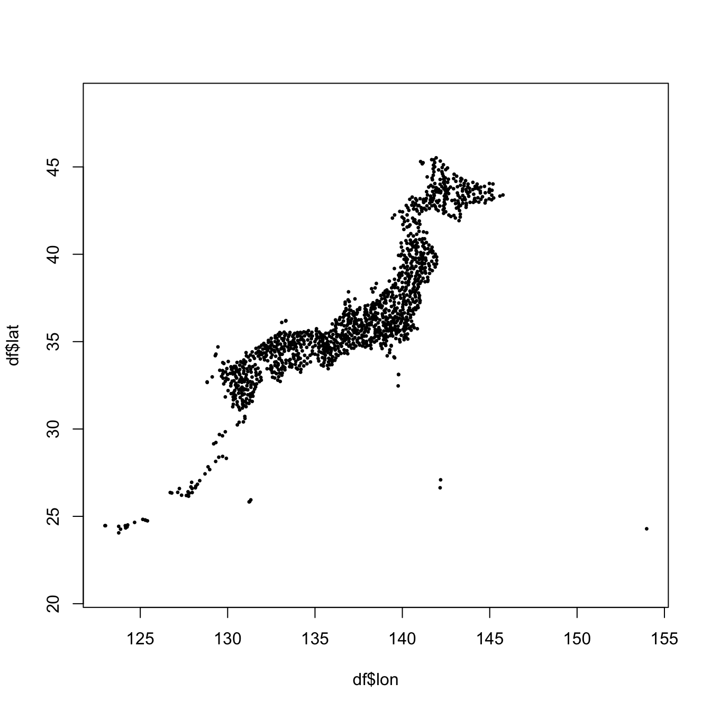

library(jsonlite)
url <- "https://www.jma.go.jp/bosai/amedas/const/amedastable.json"
json <- fromJSON(url)
station.id <- names(json)アメダス地点
format
package
JSONを読み解く
気象庁のアメダス地点はJSON形式で提供されている。 RでJSONを扱うパッケージは複数あるが、ここではjsonを使う。
fromJSON() にURLを文字列で渡すと、内容に応じてRのクラスが選択される。 アメダス地点の場合は、リストが返ってくる。 緯度、経度、標高、漢字の地点名を取得して、data.frameを作成する。 地点番号は行の名前に使う。
緯度 lat と経度 lon は度と分秒のベクトルとしてリストの中に格納されている。十進法に直す deg2decimal() とリストの中の lat と lon にこれを適用する函数を用意する。
deg2decimal <- function(d) {
dmat <- matrix(d, ncol = 2)
dmat[, 1] + dmat[, 2] / 60
}
dec.lonlat <- function(lst) {
lst$lon <- deg2decimal(lst$lon)
lst$lat <- deg2decimal(lst$lat)
lst
}列の数を指定して、空の data.frame を作るには、行の数が0である matrix を渡す。
cn <- c("lat", "lon", "alt", "kjName")
df <- data.frame(matrix(ncol = length(cn), nrow = 0))
colnames(df) <- c(cn)
for (id in station.id) {
stn <- dec.lonlat(json[[id]])
df <- rbind(df, stn[cn])
}
rownames(df) <- station.id
head(df) lat lon alt kjName
11001 45.52000 141.9350 26 宗谷岬
11016 45.41500 141.6783 3 稚内
11046 45.30500 141.0450 65 礼文
11061 45.40333 141.8017 8 声問
11076 45.33500 142.1700 13 浜鬼志別
11091 45.24167 141.1867 30 本泊アメダスの分布を散布図で描画してみよう。
plot(df$lon, df$lat, pch = 20, cex = 0.5, asp = 1)
標高を規格化して、色をつけてみる。
ncol <- 100
cp <- hcl.colors(ncol, "Terrain2")
alt.min <- min(df$alt)
alt.max <- 3000
alt.normalized <- (df$alt - alt.min) / (alt.max - alt.min)
cl <- cp[ceiling(alt.normalized * (ncol - 1) + 1)]
layout(matrix(c(1, 2), ncol = 2), widths = c(0.85, 0.15))
par(mar = c(5, 4, 3, 1) + 0.1)
plot(df$lon, df$lat,
pch = 20, cex = 0.5, asp = 1, col = cl,
cex.main = 1.5, cex.lab = 1.5, cex.axis = 1.5,
main = "AMeDAS station", xlab = "lon", ylab = "lat")
par(mar = c(5, 0., 3, 4) + 0.1)
image(x = 1, y = seq(alt.min, alt.max, length.out = ncol), z = matrix(1:ncol, 1, ncol),
col = cp, axes = FALSE, xlab = "", ylab = "")
leg <- seq(0, alt.max, 500)
axis(4, at = leg, las = 2, labels = leg, cex.axis = 1.5)